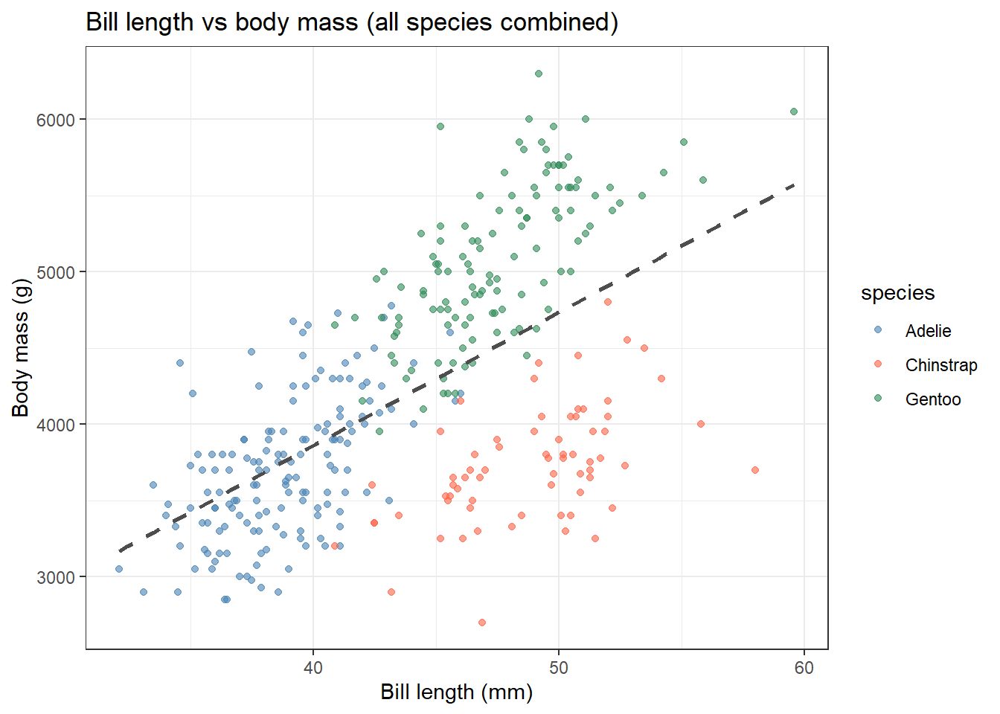
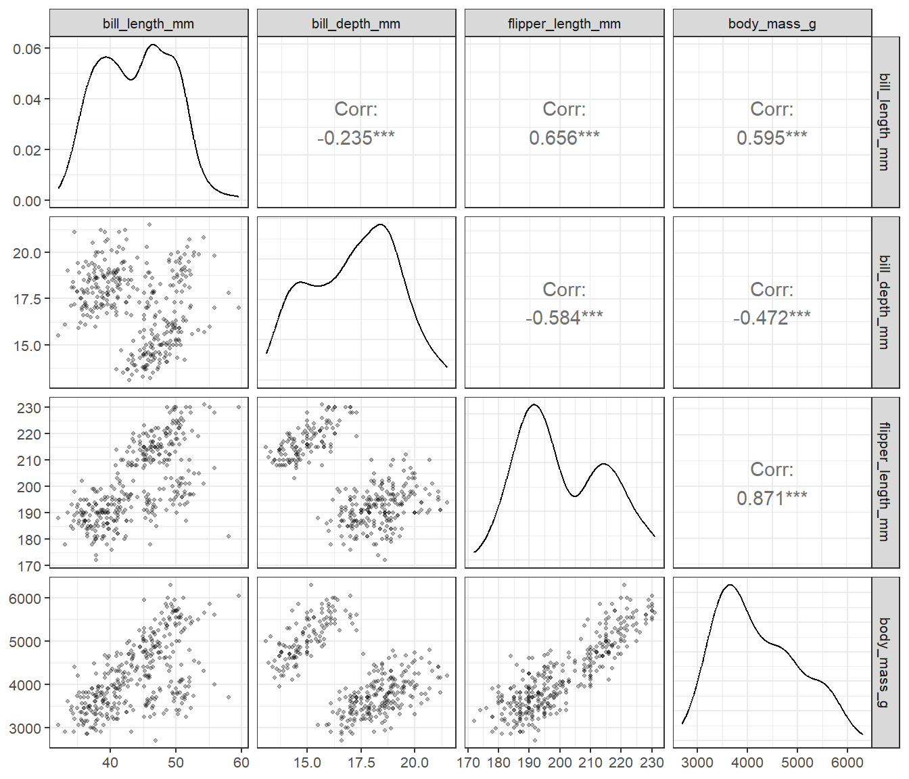
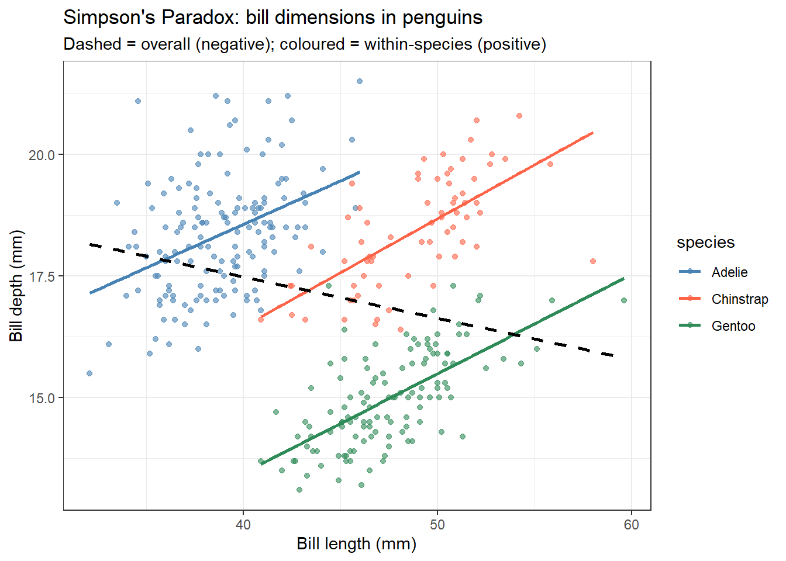
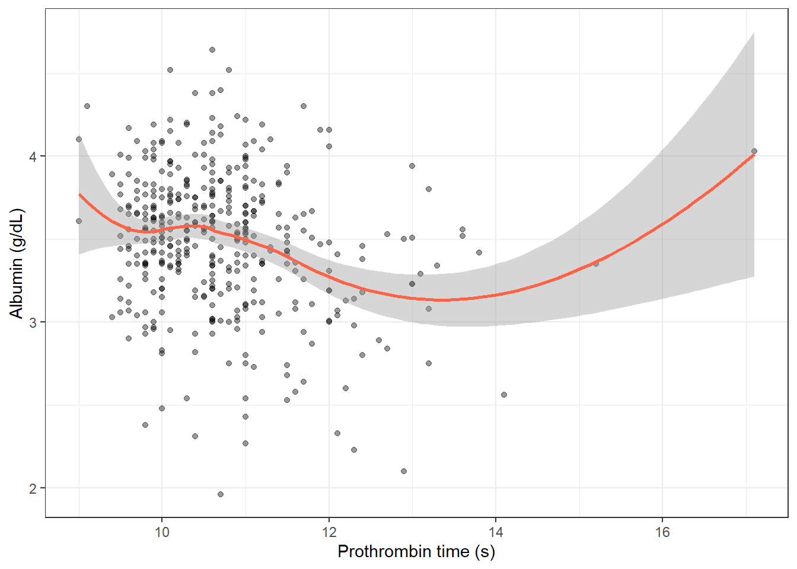

library(palmerpenguins)Warning: package 'palmerpenguins' was built under R version 4.4.3penguins_clean <- penguins |>
drop_na(bill_length_mm, bill_depth_mm, body_mass_g, flipper_length_mm, species)Before fitting a regression model, you want to understand the pairwise relationships between continuous variables in your data: which variables move together, how strong those associations are, and in what direction. Correlation gives you a standardised measure of linear association that is independent of the units of measurement. For example: does albumin decline as bilirubin rises? Is platelet count linearly associated with prothrombin time?
After completing this session you will be able to:
GGally::ggpairs()Pearson’s r measures the strength and direction of a linear relationship between two continuous variables:
\[r = \frac{\sum (x_i - \bar{x})(y_i - \bar{y})}{\sqrt{\sum (x_i - \bar{x})^2 \sum (y_i - \bar{y})^2}}\]
\(r\) ranges from -1 (perfect negative) to +1 (perfect positive). \(r = 0\) means no linear association.
When not to use Pearson’s r: - One or both variables are heavily skewed or contain outliers - The relationship is clearly non-linear (e.g., exponential) - Data are ordinal (ranked categories)
Spearman’s \(\rho\) and Kendall’s \(\tau\) work on the ranks of the data. They detect any monotonic relationship (not just linear) and are robust to outliers.
| Coefficient | Assumes | Best for |
|---|---|---|
| Pearson \(r\) | Linearity, approximately bivariate normal | Continuous, symmetric variables |
| Spearman \(\rho\) | Monotonic relationship | Skewed data, small n, ordinal |
| Kendall \(\tau\) | Monotonic relationship | Small n, many ties |
Penguin body measurements are intuitive: does a longer bill go with a deeper bill? Does body mass predict flipper length? The palmerpenguins dataset is ideal for introducing correlation because the biology makes sense and it contains a famous cautionary tale about confounding.
library(palmerpenguins)Warning: package 'palmerpenguins' was built under R version 4.4.3penguins_clean <- penguins |>
drop_na(bill_length_mm, bill_depth_mm, body_mass_g, flipper_length_mm, species)cor.test(penguins_clean$bill_length_mm, penguins_clean$body_mass_g, method = "pearson")
Pearson's product-moment correlation
data: penguins_clean$bill_length_mm and penguins_clean$body_mass_g
t = 13.654, df = 340, p-value < 2.2e-16
alternative hypothesis: true correlation is not equal to 0
95 percent confidence interval:
0.5220040 0.6595358
sample estimates:
cor
0.5951098 cor.test() Output Line by Line
Pearson's product-moment correlation
t = 15.4, df = 340, p-value < 0.001
95 percent confidence interval: 0.55 0.69
sample estimates: cor = 0.60| Output | What it means |
|---|---|
| t = 15.4 | Test statistic for H0: r = 0. Calculated as r x sqrt(n-2) / sqrt(1-r^2). Large absolute value = strong evidence r != 0. |
| df = 340 | Degrees of freedom = n - 2 |
| p < 0.001 | If true r were zero, we would almost never see this by chance |
| 95% CI: 0.55 to 0.69 | Plausible range for the true population correlation. CI excludes zero. |
| r = 0.60 | Medium-to-large positive association. Longer bills go with heavier birds. |
r^2 = 0.36: bill length explains 36% of variance in body mass. Effect size benchmarks (Cohen, 1988): |r| = 0.10 small / 0.30 medium / 0.50 large.
penguins_clean |>
ggplot(aes(x = bill_length_mm, y = body_mass_g, colour = species)) +
geom_point(alpha = 0.6) +
geom_smooth(method = "lm", se = FALSE, colour = "grey30", linetype = "dashed") +
scale_colour_manual(values = c("steelblue", "tomato", "seagreen")) +
labs(title = "Bill length vs body mass (all species combined)",
x = "Bill length (mm)", y = "Body mass (g)") +
theme_bw()`geom_smooth()` using formula = 'y ~ x'
peng_num <- penguins_clean |>
select(bill_length_mm, bill_depth_mm, flipper_length_mm, body_mass_g)
cor(peng_num, method = "pearson") |> round(2) bill_length_mm bill_depth_mm flipper_length_mm body_mass_g
bill_length_mm 1.00 -0.24 0.66 0.60
bill_depth_mm -0.24 1.00 -0.58 -0.47
flipper_length_mm 0.66 -0.58 1.00 0.87
body_mass_g 0.60 -0.47 0.87 1.00ggpairs(
peng_num,
lower = list(continuous = wrap("points", alpha = 0.3, size = 0.8)),
upper = list(continuous = wrap("cor", method = "pearson")),
diag = list(continuous = wrap("densityDiag"))
) + theme_bw(base_size = 10)
GGally::ggpairs() shows scatterplots (lower), Pearson correlations (upper), and density plots (diagonal) in one call. Flipper length and body mass are strongly correlated (r ~ 0.87).
The overall correlation between bill length and bill depth is negative (-0.23). Within each species it is positive. This is Simpson’s Paradox – always check for a grouping variable before reporting an unexpected correlation.
penguins_clean |>
ggplot(aes(x = bill_length_mm, y = bill_depth_mm, colour = species)) +
geom_point(alpha = 0.6) +
geom_smooth(method = "lm", se = FALSE) +
geom_smooth(aes(group = 1), method = "lm", se = FALSE,
colour = "black", linetype = "dashed") +
scale_colour_manual(values = c("steelblue", "tomato", "seagreen")) +
labs(title = "Simpson's Paradox: bill dimensions in penguins",
subtitle = "Dashed = overall (negative); coloured = within-species (positive)",
x = "Bill length (mm)", y = "Bill depth (mm)") +
theme_bw()`geom_smooth()` using formula = 'y ~ x'
`geom_smooth()` using formula = 'y ~ x'
# Within-species correlations
penguins_clean |>
group_by(species) |>
summarise(r = round(cor(bill_length_mm, bill_depth_mm, method = "pearson"), 2), n = n())# A tibble: 3 × 3
species r n
<fct> <dbl> <int>
1 Adelie 0.39 151
2 Chinstrap 0.65 68
3 Gentoo 0.64 123Clinical biomarkers are often skewed and require a careful choice between Pearson and Spearman correlation. This example shows how to make that decision and how to build a clinical correlation matrix for exploratory analysis.
pbc <- survival::pbc |>
as_tibble() |>
janitor::clean_names() |>
filter(!is.na(albumin), !is.na(bili), !is.na(protime), !is.na(platelet))Bilirubin is heavily right-skewed. Always plot first to decide which correlation to use.
pbc |>
ggplot(aes(x = log(bili), y = albumin)) +
geom_point(alpha = 0.4, size = 1.5) +
geom_smooth(method = "lm", colour = "tomato", se = TRUE) +
labs(title = "Albumin vs log(bilirubin) in PBC",
x = "log(Bilirubin)", y = "Albumin (g/dL)") +
theme_bw()`geom_smooth()` using formula = 'y ~ x'
# Pearson on log-transformed bilirubin
tidy(cor.test(pbc$albumin, log(pbc$bili), method = "pearson"))# A tibble: 1 × 8
estimate statistic p.value parameter conf.low conf.high method alternative
<dbl> <dbl> <dbl> <int> <dbl> <dbl> <chr> <chr>
1 -0.338 -7.21 2.79e-12 403 -0.422 -0.249 Pearson'… two.sided # Spearman on raw bilirubin (robust to skew)
tidy(cor.test(pbc$albumin, pbc$bili, method = "spearman"))Warning in cor.test.default(pbc$albumin, pbc$bili, method = "spearman"): Cannot
compute exact p-value with ties# A tibble: 1 × 5
estimate statistic p.value method alternative
<dbl> <dbl> <dbl> <chr> <chr>
1 -0.329 14718822. 1.05e-11 Spearman's rank correlation rho two.sided Both methods point in the same direction (negative association). Report Spearman when data are skewed; use log-Pearson when you want a linear model interpretation.
pbc_num <- pbc |>
mutate(log_bili = log(bili)) |>
select(albumin, log_bili, protime, platelet)
ggpairs(
pbc_num,
lower = list(continuous = wrap("points", alpha = 0.3, size = 0.8)),
upper = list(continuous = wrap("cor", method = "spearman")),
diag = list(continuous = wrap("densityDiag"))
) + theme_bw(base_size = 10)Warning in cor.test.default(x, y, method = method, use = use): Cannot compute
exact p-value with ties
Warning in cor.test.default(x, y, method = method, use = use): Cannot compute
exact p-value with ties
Warning in cor.test.default(x, y, method = method, use = use): Cannot compute
exact p-value with ties
Warning in cor.test.default(x, y, method = method, use = use): Cannot compute
exact p-value with ties
Warning in cor.test.default(x, y, method = method, use = use): Cannot compute
exact p-value with ties
Warning in cor.test.default(x, y, method = method, use = use): Cannot compute
exact p-value with ties
When testing many correlations at once, adjust p-values to control the false discovery rate:
pbc_num |>
pivot_longer(-albumin, names_to = "variable", values_to = "value") |>
group_by(variable) |>
summarise(
r = cor(albumin, value, use = "complete.obs", method = "spearman"),
tidy(cor.test(albumin, value, method = "spearman"))
) |>
select(variable, r, p.value) |>
mutate(p_adj = p.adjust(p.value, method = "holm"))Warning: There were 3 warnings in `summarise()`.
The first warning was:
ℹ In argument: `tidy(cor.test(albumin, value, method = "spearman"))`.
ℹ In group 1: `variable = "log_bili"`.
Caused by warning in `cor.test.default()`:
! Cannot compute exact p-value with ties
ℹ Run `dplyr::last_dplyr_warnings()` to see the 2 remaining warnings.# A tibble: 3 × 4
variable r p.value p_adj
<chr> <dbl> <dbl> <dbl>
1 log_bili -0.329 1.05e-11 3.15e-11
2 platelet 0.191 1.09e- 4 2.18e- 4
3 protime -0.183 2.14e- 4 2.18e- 4palmerpenguins (used in Example 1): Four continuous body measurements with a species grouping variable. Perfect for teaching Pearson correlation and Simpson’s Paradox.
survival::pbc (used in Example 2): Multiple skewed clinical biomarkers (albumin, bilirubin, protime, platelet). Real-world case for choosing Spearman over Pearson.
NHANES: nhanesA or nhanes package – population-level continuous variables (blood pressure, cholesterol, BMI, age).
Correlation ≠ causation Two variables can correlate strongly because they share a common cause, not because one causes the other. Always think mechanistically.
Using Pearson’s r with skewed data or outliers A single extreme outlier can drive a large r. Always plot your data before computing a correlation. Use Spearman’s - for robustness.
Multiple comparisons in correlation matrices Testing all \(p(p-1)/2\) pairs from a correlation matrix inflates Type I error. Adjust p-values with p.adjust() when reporting multiple correlations.
Range restriction If you select subjects based on one of the variables (e.g., only patients with bilirubin > 5), the correlation in that subset will differ from the population correlation - usually attenuated.
Ecological correlation Correlations computed on group averages (e.g., countries, hospitals) are typically stronger than individual-level correlations. Do not interpret ecological correlations as individual-level associations.
“r = 0.37 means 37% of variance is explained” No. The variance explained is r², not r. With r = 0.37, bilirubin explains r² = 0.14 = 14% of variance in albumin. Always report r² alongside r for a complete description of the relationship.
“A statistically significant correlation is a strong correlation” With n = 400 patients, even r = 0.10 will be statistically significant (p < 0.05). Statistical significance tells you that r - 0; it does not tell you the association is clinically important. Always report the r value and confidence interval, not just “p < 0.05”.
“Spearman r means the same as Pearson r” Both range from -1 to +1, but they measure different things. Pearson measures linear association between the raw values. Spearman measures monotonic association using the ranked values. They are not interchangeable; do not compare Pearson r from one study to Spearman r from another.
“A high correlation matrix entry means I should include that predictor in regression” High zero-order correlations can be misleading. After adjusting for other predictors, the partial effect may be much smaller. Use correlation matrices for exploration, not for selecting predictors.
“A negative correlation means the variables are inversely proportional” A negative r means higher values of X tend to go with lower values of Y; that is all. It says nothing about proportionality, linearity beyond what the scatter plot shows, or whether the relationship is causal.
penguins_clean. Does the relationship look linear?colour = species to the plot. Does the relationship look consistent across species?library(palmerpenguins)
pg <- penguins |> drop_na(flipper_length_mm, body_mass_g, species)
# 1. Plot
pg |>
ggplot(aes(x = flipper_length_mm, y = body_mass_g)) +
geom_point(alpha = 0.4) +
geom_smooth(method = "lm", colour = "tomato") +
labs(x = "Flipper length (mm)", y = "Body mass (g)") + theme_bw()`geom_smooth()` using formula = 'y ~ x'
# 2. Both correlations
tidy(cor.test(pg$flipper_length_mm, pg$body_mass_g, method = "pearson"))# A tibble: 1 × 8
estimate statistic p.value parameter conf.low conf.high method alternative
<dbl> <dbl> <dbl> <int> <dbl> <dbl> <chr> <chr>
1 0.871 32.7 4.37e-107 340 0.843 0.895 Pearson… two.sided tidy(cor.test(pg$flipper_length_mm, pg$body_mass_g, method = "spearman"))Warning in cor.test.default(pg$flipper_length_mm, pg$body_mass_g, method =
"spearman"): Cannot compute exact p-value with ties# A tibble: 1 × 5
estimate statistic p.value method alternative
<dbl> <dbl> <dbl> <chr> <chr>
1 0.840 1066875. 2.76e-92 Spearman's rank correlation rho two.sided # 3-4. Within-species
pg |>
group_by(species) |>
summarise(
r = round(cor(flipper_length_mm, body_mass_g, method = "pearson"), 2),
n = n()
)# A tibble: 3 × 3
species r n
<fct> <dbl> <int>
1 Adelie 0.47 151
2 Chinstrap 0.64 68
3 Gentoo 0.7 123# Full cor.test for Adelie
tidy(cor.test(
pg$flipper_length_mm[pg$species == "Adelie"],
pg$body_mass_g[pg$species == "Adelie"],
method = "pearson"
))# A tibble: 1 × 8
estimate statistic p.value parameter conf.low conf.high method alternative
<dbl> <dbl> <dbl> <int> <dbl> <dbl> <chr> <chr>
1 0.468 6.47 1.34e-9 149 0.333 0.584 Pears… two.sided Using survival::pbc, explore the association between albumin and prothrombin time.
pbc <- survival::pbc |>
as_tibble() |>
janitor::clean_names() |>
filter(!is.na(albumin), !is.na(bili), !is.na(protime), !is.na(platelet))
# 1. Plot
pbc |>
ggplot(aes(x = protime, y = albumin)) +
geom_point(alpha = 0.4, size = 1.5) +
geom_smooth(method = "loess", colour = "tomato") +
labs(x = "Prothrombin time (s)", y = "Albumin (g/dL)") + theme_bw()`geom_smooth()` using formula = 'y ~ x'
# 2. Both correlations
tidy(cor.test(pbc$albumin, log(pbc$protime), method = "pearson"))# A tibble: 1 × 8
estimate statistic p.value parameter conf.low conf.high method alternative
<dbl> <dbl> <dbl> <int> <dbl> <dbl> <chr> <chr>
1 -0.203 -4.17 0.0000370 403 -0.295 -0.108 Pearson… two.sided tidy(cor.test(pbc$albumin, pbc$protime, method = "spearman"))Warning in cor.test.default(pbc$albumin, pbc$protime, method = "spearman"):
Cannot compute exact p-value with ties# A tibble: 1 × 5
estimate statistic p.value method alternative
<dbl> <dbl> <dbl> <chr> <chr>
1 -0.183 13097381. 0.000214 Spearman's rank correlation rho two.sided # 3-4. Matrix with p-adjustment
pbc_num <- pbc |> mutate(log_bili = log(bili)) |>
select(albumin, log_bili, protime, platelet)
pbc_num |>
pivot_longer(-albumin, names_to = "variable", values_to = "value") |>
group_by(variable) |>
summarise(
r = cor(albumin, value, use = "complete.obs", method = "spearman"),
tidy(cor.test(albumin, value, method = "spearman"))
) |>
select(variable, r, p.value) |>
mutate(p_adj = p.adjust(p.value, method = "holm"))Warning: There were 3 warnings in `summarise()`.
The first warning was:
ℹ In argument: `tidy(cor.test(albumin, value, method = "spearman"))`.
ℹ In group 1: `variable = "log_bili"`.
Caused by warning in `cor.test.default()`:
! Cannot compute exact p-value with ties
ℹ Run `dplyr::last_dplyr_warnings()` to see the 2 remaining warnings.# A tibble: 3 × 4
variable r p.value p_adj
<chr> <dbl> <dbl> <dbl>
1 log_bili -0.329 1.05e-11 3.15e-11
2 platelet 0.191 1.09e- 4 2.18e- 4
3 protime -0.183 2.14e- 4 2.18e- 4Using your own data, identify two continuous variables you expect to be related. Plot them, compute the appropriate correlation, and test the significance. Write a two-sentence result. Now think of a third variable that might confound the relationship - how would you check for it?
In a methods section: “The association between [variable 1] and [variable 2] was assessed using Pearson’s correlation coefficient. Spearman’s rank correlation was used for [skewed variable] because [reason].”
In results: “There was a [strong/moderate/weak] [positive/negative] correlation between [variable 1] and [variable 2] (r = X, 95% CI [L, U], p = Y, n = N).”
Correlation benchmarks (Cohen):
| r | |
|---|---|
| < 0.1 | Negligible |
| 0.1–0.3 | Small |
| 0.3–0.5 | Moderate |
| > 0.5 | Large |
What to always include:
Never report r² alone — the sign (direction) is lost and readers cannot recover it.
?cor.test in R: documentation covering all three methodsGGally::ggpairs() vignette for visualising multivariate relationships